CFD Validation | Subsonic Jet | NASA Benchmark Study

This project presents a comprehensive CFD validation study of the NASA Axisymmetric Subsonic Jet (ASJ) case using the ARN2 convergent nozzle geometry. The analysis demonstrates professional-level compressible flow simulation using ANSYS Fluent with density-based solver and SST k-ω turbulence modeling.
The study includes a rigorous grid independence study (coarse: 70,600 elements vs. fine: 129,403 elements), validation against NASA experimental data and reference CFD results, and detailed jet flow characterization including potential core decay, far-field behavior, and wall boundary layer resolution (y⁺ < 1).
Results show excellent agreement with NASA reference CFD and very good agreement with experimental data, with only a known, minor discrepancy in potential core length prediction (a documented SST k-ω limitation).
Perform a complete CFD validation study of compressible subsonic jet flow through a NASA-documented convergent nozzle (ARN2) to:
A subsonic jet issues from a convergent nozzle into a quiescent freestream. The jet consists of three physical regions:
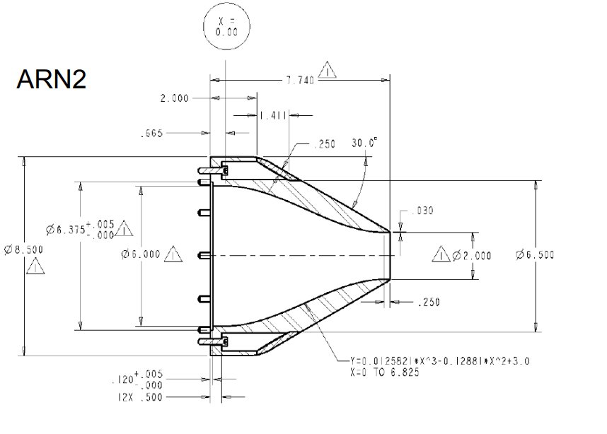
Original ARN2 nozzle dimensions (NASA/TM–2005-213997, Bridges & Wernet) used to build the CAD geometry.
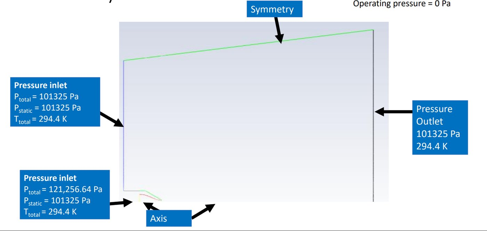
Half-model (axisymmetric) domain with pressure inlet, freestream inlet, pressure outlet, symmetry, and axis boundaries labeled.
An axisymmetric half-model was created with structured meshing and strategic refinement in high-gradient regions:
Two meshes were systematically created:
| Mesh | Elements | Nodes | Purpose |
|---|---|---|---|
| Coarse | 70,600 | 71,376 | Initial solution, convergence check |
| Fine | 129,403 | 128,460 | Grid-independent solution |
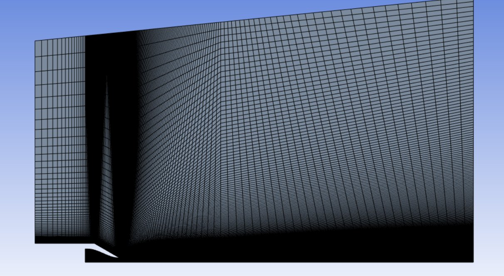
Edge sizing controls refine the shear layer and wall boundary layers near the nozzle exit.
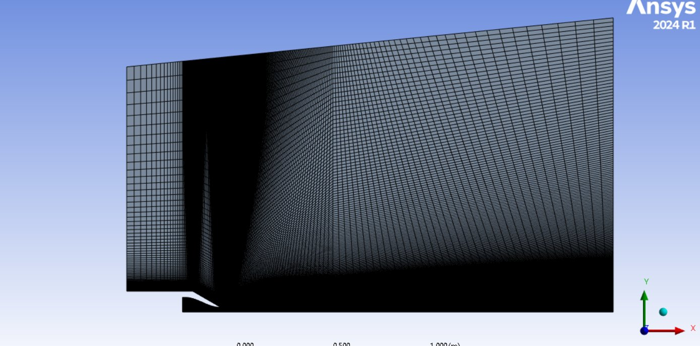
Additional divisions per edge for the grid-convergence study, used to confirm independence of the centreline velocity result.
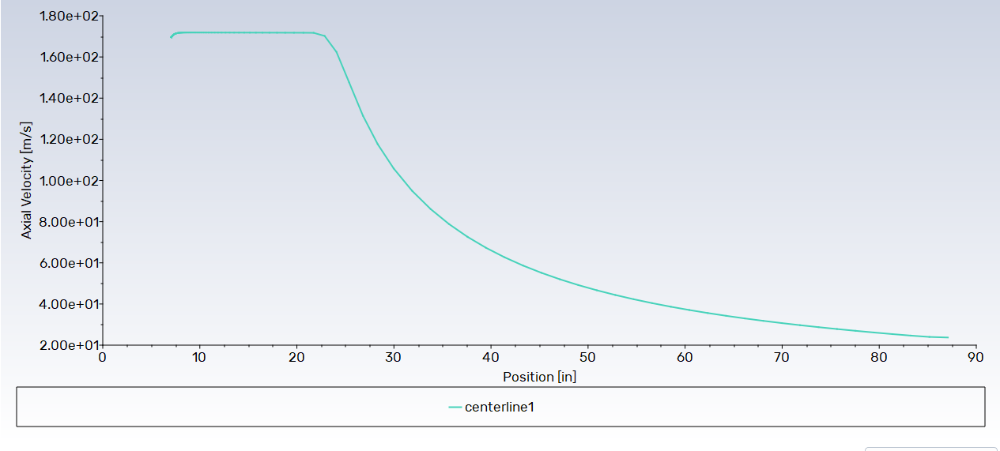
Potential core plateau (~7–25 in) followed by the decay zone — classic subsonic jet signature.
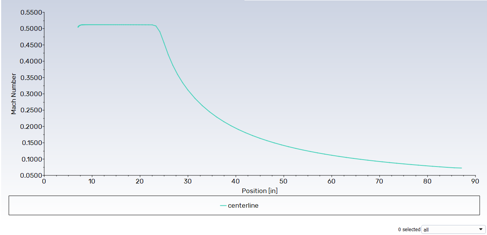
Same shape as the coarse-mesh velocity plot (Mach ≈ 0.51 in the core), an early qualitative indicator of mesh convergence.
Mach contours show the progressive acceleration through the convergent section and the subsequent jet development:
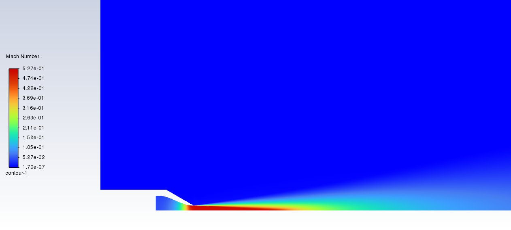
Peak Mach ≈ 0.527 at the exit, consistent with the Mjet ≈ 0.51 target.
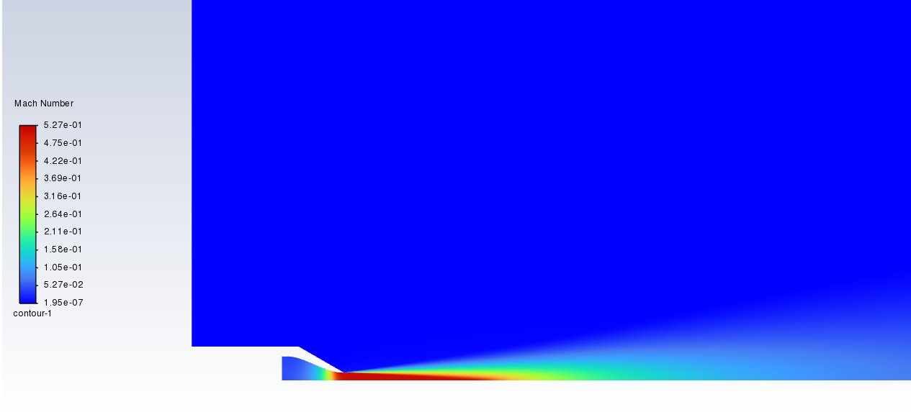
Same peak Mach, with a smoother, more continuous shear-layer gradient than the coarse mesh.
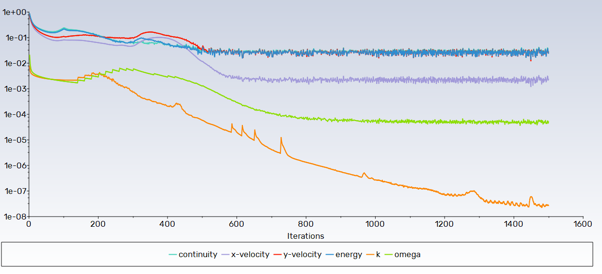
Continuity, momentum, energy, k and omega residuals over ~1,500 iterations. The density-based solver shows the expected oscillation in the convective scalars once turbulent fluctuations are resolved, while k and omega continue dropping toward 10⁻⁷–10⁻⁸.
| Data Source | Centerline Velocity Profile | Agreement |
|---|---|---|
| NASA Experimental (PIV) | Measured jet decay from x/Dj = 0 to ~40 | Reference baseline |
| NASA CFD Reference (SST k-ω) | Published benchmark solution | Reference baseline |
| Present Study - Fine Mesh | Computed velocity profile | ✅ Excellent match with NASA CFD |
| Present Study - Coarse Mesh | Coarser grid solution | ✅ Nearly identical to fine mesh |
Coarse (70,600 elements) and fine (129,403 elements) centerline velocity profiles are nearly superimposed, demonstrating that the solution is independent of mesh refinement. The coarse mesh is already well-resolved; the fine mesh provides additional shear layer detail without changing jet decay behavior.
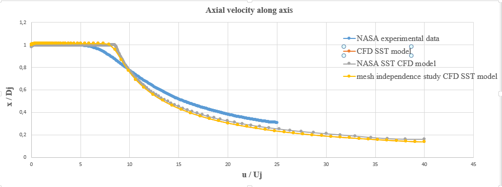
x/Dj vs. u/Uj for NASA experimental PIV data, the NASA reference SST k-ω CFD solution, and the present coarse and fine meshes. The present fine-mesh curve (yellow) overlays the NASA CFD curve (grey) almost exactly, and all four curves converge in the far field (x/Dj > 20).
The computed centerline velocity decays match NASA experimental PIV data very closely with one known exception:
The slight faster decay in the potential core region (8–15 nozzle diameters) is a documented limitation of the SST k-ω model for subsonic jets — it tends to underestimate the potential core length by a small amount compared to PIV measurements. This is a well-known characteristic and does not invalidate the simulation; far-field predictions are accurate.
y⁺ values well below 1.0 indicate proper resolution of the viscous sublayer without need for wall-function approximations. The SST model can resolve the near-wall flow accurately, capturing boundary layer development and wall shear effects.
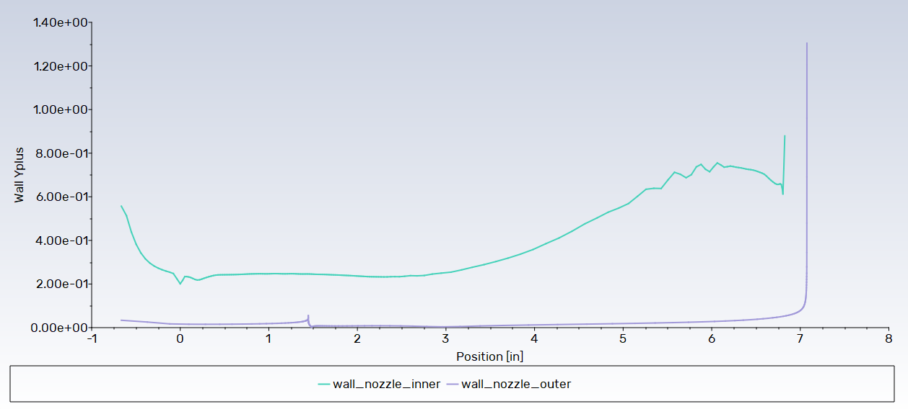
y⁺ stays in the 0.2–0.3 range over most of the wall, with a local peak of 0.6–0.8 near the trailing edge (x ≈ 5–7 in) where flow acceleration thins the boundary layer. Inner and outer walls track closely, confirming uniform mesh quality.
The density-based solver was essential for this compressible flow problem (Mach 0.527). Unlike pressure-based solvers (which solve momentum and pressure equations), the density-based solver directly solves the continuity equation for density, making it naturally suited to compressible flows. For subsonic Mach numbers up to ~0.3, pressure-based solvers work; above that, density-based is more stable and accurate.
The SST model was chosen over k-ε specifically because it handles wall-bounded and free-shear flows better. In the jet mixing zone, the SST blends k-ω behavior (accurate in boundary layers, y⁺ < 1) with k-ε behavior (better in outer regions). This explains the excellent wall y⁺ resolution (0.2–0.3) and accurate far-field jet decay. For airfoil/wall-heavy problems, SST is superior to standard k-ε.
This study shows a critical distinction: grid independence (coarse and fine mesh give nearly identical results) does NOT guarantee accuracy — both meshes can be wrong if the physical model or boundary conditions are incorrect. However, achieving grid independence IS a prerequisite for credibility. Here, grid independence + validation against NASA data = confidence in the solution.
The SST k-ω model's slight underprediction of potential core length is known and documented in literature. Rather than a "failure," this demonstrates scientific maturity: understanding where your model works well (far-field) and where it doesn't (core), rather than claiming universal accuracy. For jet noise and mixing applications, far-field accuracy matters most.
At Mach 0.527 (subsonic but not negligible), compressibility effects become relevant:
For Mach < 0.3, incompressible assumptions are reasonable; above that, compressible treatment is essential.
This study validated multiple aspects: centerline velocity (excellent), Mach contours (correct structure), wall y⁺ (excellent), convergence residuals (< 1e-6), and agreement with two independent data sources (NASA CFD + experiments). Trusting a single output metric is risky; comprehensive validation across multiple physics is more robust.
Both coarse and fine meshes achieved:
Key outputs extracted and analyzed:
This comprehensive CFD validation study of the NASA ARN2 subsonic jet demonstrates professional-quality compressible flow simulation with rigorous mesh convergence verification and direct comparison to NASA experimental and computational benchmarks.
Key achievements: Excellent agreement with NASA reference CFD results, very good agreement with experimental PIV data (with only a known, minor SST k-ω limitation in the potential core), confirmed grid independence across two mesh densities, and proper boundary layer resolution (y⁺ < 1).
The simulation demonstrates competency in:
✓ Project Outcomes